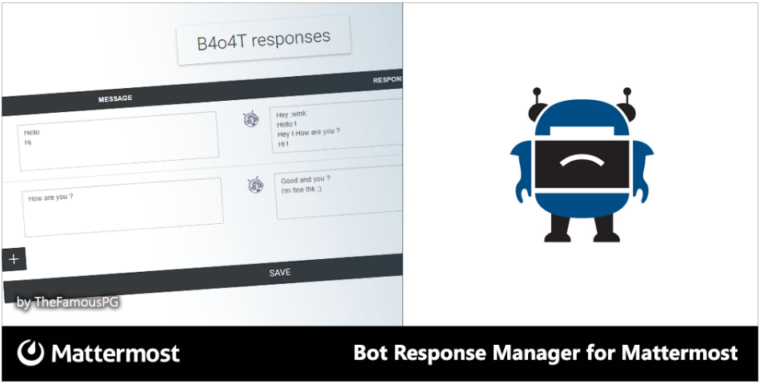
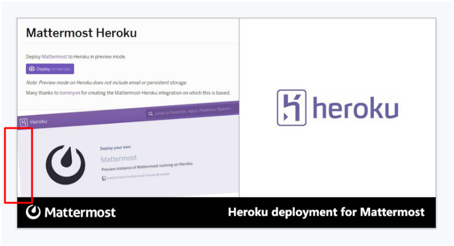
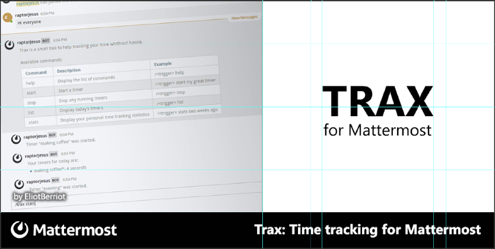

Mattermost Asset Guidelines¶
The following guidelines are intended to help queue and prepare marketing assets for community projects by the Mattermost core committers and the Mattermost community.
Contents
Queuing Assets for New Community Projects¶
Follow these steps to queue an asset for a new community project.
Integrations and Installers¶
If you find a new integration or installer in the Mattermost Facebook page, Mattermost Twitter page, GitHub or elsewhere you feel Mattermost should promote:
- Post a request to the Contributors team “Integrations and Apps” channel with:
mention to @jason
link to suggested integration
link to creator’s GitHub profile, if applicable
Example:
@jason Here is [Matterbridge](https://github.com/42wim/matterbridge) from [42wim](https://github.com/42wim), which is a sample bridge between Mattermost, IRC, XMPP, Gitter and Slack. Is this something Mattermost would like to promote?
If the proposal is accepted, Ops reaches out to the integration creator by opening a GitHub issue with the following text:
Title: Share your work with Mattermost community? Body: Hi @{GitHub_username}, We came across your work and we'd love to help share it with the Mattermost community. If this interests you, we wondered if you'd help complete a form to tell us more about your work so we can promote it? Here's the form: https://spinpunch.wufoo.com/forms/mattermost-integrations-and-installers/ We'd also like to welcome you to join our public integrations community channel on our nightly build server: https://pre-release.mattermost.com/core/channels/integrations Thanks for being a valued member of the Mattermost Community! - The Mattermost TeamWhen a contributor submits an integration via the Wufoo form, a Zapier webhook posts relevant information into the Integrations and Apps channel.
Ops replies to each new Wufoo post with a numbered project title and project status. Example:
#### 64) Cloud Foundry Integration (work queued)
Media Articles¶
When a relevant article on Mattermost is found in the news, add a new entry into this Google document and follow the process specified there.
Step-by-Step Asset Creation Guide for Artists¶
Follow these steps to create an asset for integration or feature promotion, integration blog tweet, or user award tweet.
Integration or Feature Promotion¶
- Use this template as a starting point
- Change text in the “title” layer following the guidelines in Feature Title
- Change text in the “by cburns” layer to replace the name with appropriate creator name following the guidelines in Feature Creator
- Change the contents of the “Left Image” layer to update representative art following the guidelines in Feature Representative Art
- Change the contents in the “right image” layer to update representative logo(s) following the guidelines in Mattermost and Representative Logos
- Save the finished asset draft in both .TIF and .PNG format, and upload to your “Dropbox Share” folder
Integration Blog¶
Occasionally a blog post will be written to further promote an integration. Follow these steps to create a marketing asset promoting said blog entry:
- Use this template as a starting point
- Change text in the “title” layer to read “Meet the Creator:”, followed by the proper integration name
- Change text in the “by liger1978” layer to the integration creator’s name
- Change the contents in the “right image” layer to include proper representative logo, followed by a split with the blue Mattermost logo. This helps create the message that it’s the representative and Mattermost together
- Obtain a photo of the integration creator, apply a Wall Street Journal “Hedcut” effect, and update the “Left Image” layer. A helpful tutorial for how to achieve the “Hedcut” effect can be found here
- Save the finished asset draft in both .TIF and .PNG format, and upload to your “Dropbox Share” folder
User Award¶
Occasionally a blog post will be written to recognize a member for their contributions to Mattermost. Follow these steps to create a marketing asset promoting said blog entry:
- Use this template as a starting point
- Change text in the “title” layer to update the user being recognized, the event, and contribution or integration made
- Change the contents in the “right image” layer to include proper representative logo and/or a picture of the user being recognized
- Change the contents of the “Left Image” layer to update text with proper event name and match color to logo in the right pane
- Save the finished asset draft in both .TIF and .PNG format, and upload to your “Dropbox Share” folder
Asset Elements¶
The following include guidelines for specific elements of an asset.
Feature Title¶
- Appears in the bottom right corner of the asset
- Title should “communicate the benefit” of the work, while referencing its name, followed by “for Mattermost”
- Sometimes the title is a straightforward description of an app that can now connect to Mattermost, like “Jira integration for Mattermost”
- Sometimes the title needs to be non-standard, like “Gitter integration for Mattermost via Matterbridge”
- Title should be sentence case
- Short titles are better than longer titles
Feature Creator¶
- Appears in the bottom left corner of the left “representative art” pane
- Displays who created the integration (Twitter or GitHub account of the creator)
- If text doesn’t blend well with left pane representative art, adjust the outer glow effect
Feature Representative Art¶
- Representative art appears in the left pane of the asset
- Screenshot of a feature in action is most preferred (see guidelines for Feature Screenshot here)
- If no feature screenshot is available, take a screenshot of a well-formatted “README” file or of feature code with the word “Mattermost”
- If using a “README” file, ensure the screenshot doesn’t highlight spelling or capitalization errors
- If necessary, consider using a two-image, half-and-half combination of the README and feature code to provide a visually appealing color inversion. See example
- When creating a two-image representative art piece, ensure that the top section is continuous and flat to avoid a triangular blank space
- Place and size representative art in a way that it doesn’t clash with the Feature Creator layer
- Leave a 17px border of white space in between representative art and banner edge
- Have equal margins on the left side and above the image
- Leave equal whitespace between all like objects
- Avoid wavy lines when rotating an image as shown in the sample below

- To avoid them, increase the size of the original layer, rotate it, then reduce the size of the image
- If you use a rotated image, avoid visible gaps between the edge of the banner and the image as shown in the sample below

- Colored shading on the left pane should match the primary colors of the logo in the right pane
- Adjacent areas of light and dark should always have a separator, or have a shading so that the areas don’t bleed into the background
- If a logo is used, ensure it follows the same guidelines from Mattermost and Representative Logos section
Feature Screenshot¶
When taking a screenshot of a feature, follow these guidelines:
- Complete: Profile pictures and real people names should be filled out. Use either in-house art, free or purchased clip art
- Authentic: Try to model a real world interaction. If you’re modifying the image such as changing username and profile picture, make sure to do it throughout the image
- Oversized: Provide screenshots that are at least 20-30% larger than needed, so that there’s room to rotate and crop the image as needed
- Illustrative: Try to find screenshots that are representative of the feature
Mattermost and Representative Logos¶
- Mattermost logo appears in the bottom left corner of the asset
- Representative logo appears in the right pane
- If we’re promoting a Mattermost feature, not an integration, use Mattermost white logo on blue background
- If representative logo is from a product, find a logo with the product name, not just the image when possible. Example:
Correct:
Incorrect:
- Ensure representative logo is similar in size to other logos shown in Twitter ad examples
- If no representative logo exists, use this template as a starting point to create a new custom one:

- Change the size of font so the name fits within the guides shown in reference screenshot below
- Text of name should be at least as wide as “for Mattermost”
- The space between the bottom of the integration name and “for Mattermost” should be the same distance as in the reference screenshot above
- Vertically center the combined image of the integration name and the text “for Mattermost”
Step-by-Step Asset Review Guide for Ops¶
- Upload the artists “work in progress” files to the Archive Dropbox sub-folder in Twitter Marketing
- In the Contributors team, find the appropriate conversation thread for the queued project, and add a comment mentioning @jason with the following:
- Link to the image in Dropbox
- Proposed tweet text with a note to specify whether or not the mention in the text is the Twitter handle of the user.
- @username is the Twitter account of the GitHub user if the text uses a Twitter username, or
- @username is NOT the Twitter account of GitHub user if the text doesn’t use a Twitter username
- Proposed scheduled tweet date
- Never schedule a tweet for the 16th or 22nd of any given month as these days are reserved for Mattermost and GitLab release announcements, respectively
- .png version of the file for a quick preview

{kind=link}